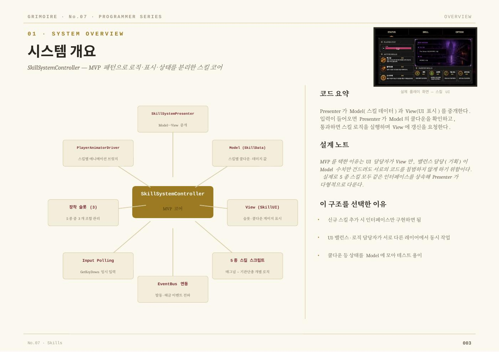
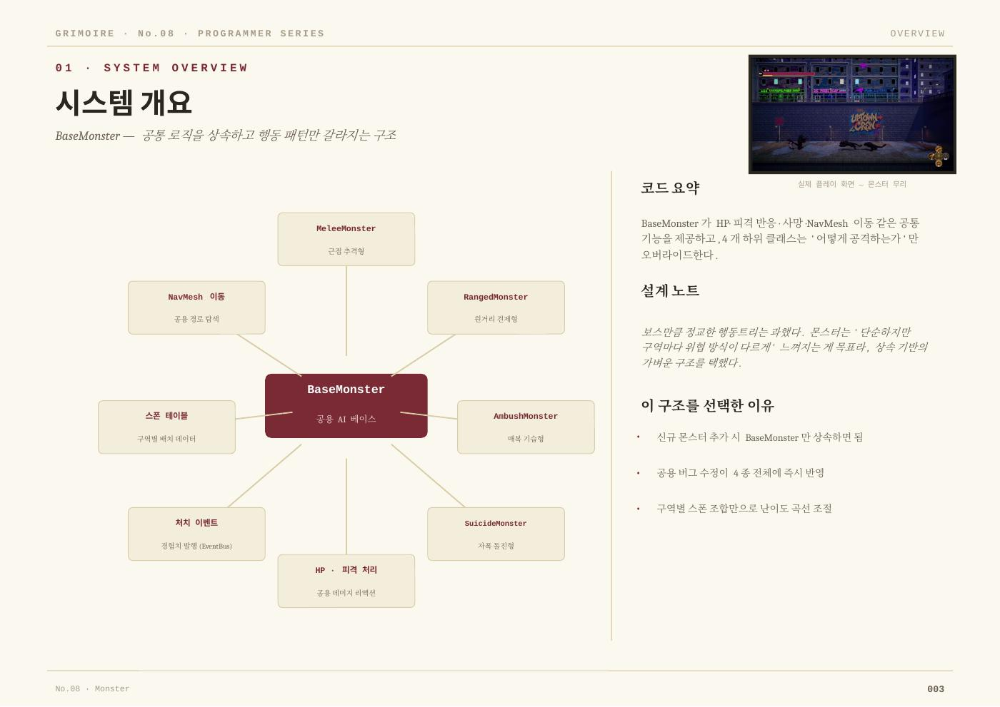
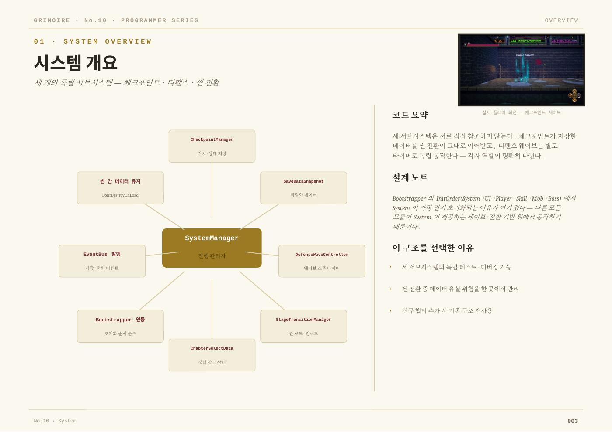

THE INVESTIGATOR
Dorothy
도로시
진실을 보려는 수사관.

CHAPTER I / UNTRUTH
CHAPTER I · PLAYABLE ARCHIVE
현재 완성된 챕터 1의 실제 플레이 기록입니다. 타이틀부터 거리 탐험, 전투, 캐릭터 연출까지 하나의 플레이 흐름으로 확인할 수 있습니다.
GRIMOIRE의 타이틀과 챕터 1의 시작.
CHARACTER ARCHIVE
THE INVESTIGATOR
도로시
진실을 보려는 수사관.
CHAPTER I BOSS
루주후드
붉은 망토의 진실을 품은 적.

CHARACTER MODELING · IN GAME
모델링, 텍스처, 리깅, Unity 적용까지 실제 작업 과정을 자동 슬라이드로 정리했습니다.
PROGRAMMING · PLAYABLE SYSTEMS
챕터 1의 전투, UI, 진행 흐름을 실제로 연결한 핵심 모듈입니다.

MVP 구조와 EventBus로 스킬 발동, 쿨다운, UI를 분리했습니다.

근접·원거리·매복·자폭 AI를 공용 베이스 구조로 설계했습니다.
챕터 선택, 스킬 패널, 체크포인트, 일시정지 화면을 데이터와 연결했습니다.

체크포인트 저장, 디펜스 웨이브, 씬 전환을 독립 시스템으로 구성했습니다.

PROJECT ART BOOK
GRIMOIRE · CHAPTER I · DEVELOPMENT ARCHIVE